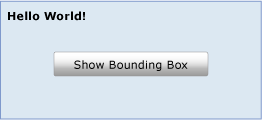
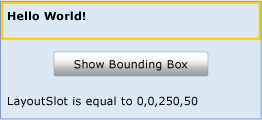

Макет
В этом разделе описывается система макета Windows Presentation Foundation (WPF). Для создания пользовательских интерфейсов в WPF важно понимание того, как и когда происходят вычисления макета.
В этом разделе содержатся следующие подразделы.
Ограничивающие прямоугольники элемента
При планировании макета в WPF важно понимать принцип функционирования ограничивающих прямоугольников, которые окружают все элементы. Каждый FrameworkElement потребления макета системы может рассматриваться как прямоугольник, вставленный в макет. LayoutInformation Класс возвращает границы элемента макета, или ячейки. Размер прямоугольника определяется путем вычисления доступного пространства на экране, размера любых ограничений, свойств макета (например, поля и заполнение) и также индивидуального поведения родительского Panel элемент. Обработка этих данных, система макета имеет возможность вычислить положение всех потомков конкретного Panel. Важно помнить, что характеристики размеров, определенные в родительском элементе, например Border, влияют на его дочерние элементы.
На рисунке ниже представлен простой макет.

Этот макет можно получить с помощью приведенного ниже кода XAML.
<Grid Name="myGrid" Background="LightSteelBlue" Height="150">
<Grid.ColumnDefinitions>
<ColumnDefinition Width="250"/>
</Grid.ColumnDefinitions>
<Grid.RowDefinitions>
<RowDefinition />
<RowDefinition />
<RowDefinition />
</Grid.RowDefinitions>
<TextBlock Name="txt1" Margin="5" FontSize="16" FontFamily="Verdana" Grid.Column="0" Grid.Row="0">Hello World!</TextBlock>
<Button Click="getLayoutSlot1" Width="125" Height="25" Grid.Column="0" Grid.Row="1">Show Bounding Box</Button>
<TextBlock Name="txt2" Grid.Column="1" Grid.Row="2"/>
</Grid>
Один TextBlock элемент размещается внутри Grid. Хотя текст заполняет только верхний левый угол первого столбца, выделенное пространство для TextBlock самом деле гораздо больше. Ограничивающий прямоугольник любого FrameworkElement можно получить с помощью GetLayoutSlot метод. На следующем рисунке показан ограничивающий прямоугольник для TextBlock элемент.

Как показано желтым прямоугольником, выделенное пространство для TextBlock элемент деле гораздо больше, чем кажется. При добавлении дополнительных элементов Grid, это выделение может сжиматься или растягиваться в зависимости от типа и размера добавляемых элементов.
Ячейка макета элемента TextBlock преобразуется в Path с помощью GetLayoutSlot метод. Этот способ может быть полезен для отображения ограничивающего прямоугольника элемента.
private void getLayoutSlot1(object sender, System.Windows.RoutedEventArgs e)
{
RectangleGeometry myRectangleGeometry = new RectangleGeometry();
myRectangleGeometry.Rect = LayoutInformation.GetLayoutSlot(txt1);
Path myPath = new Path();
myPath.Data = myRectangleGeometry;
myPath.Stroke = Brushes.LightGoldenrodYellow;
myPath.StrokeThickness = 5;
Grid.SetColumn(myPath, 0);
Grid.SetRow(myPath, 0);
myGrid.Children.Add(myPath);
txt2.Text = "LayoutSlot is equal to " + LayoutInformation.GetLayoutSlot(txt1).ToString();
}
Система макета
В самом простом случае макет является рекурсивной системой, которая изменяет размер и расположение элемента и отображает его на экране. В частности, макет описывает процесс измерения и упорядочения объекта Panel элемента Children коллекции. Макет является интенсивным процессом. Чем больше Children коллекции, тем больше количества вычислений, которые должны выполняться. Сложность может также быть вызвана поведением макета, определяемым Panel элемент, которому принадлежит коллекция. Относительно простой Panel, такие как Canvas, может иметь лучшую производительность, чем более сложный Panel, такие как Grid.
Каждый раз, дочерний элемент UIElement изменяет свое положение, он потенциально имеет возможность запустить новый проход системы макета. Таким образом, важно понимать события, которые может вызывать система макета, так как ненужный вызов может привести к ухудшению производительности приложения. Далее описывается процесс, который происходит при вызове системы макета.
Дочерний элемент UIElement начинает процесс разметки первым, задав его основные измеряемые свойства.
Свойства, определенные для размера FrameworkElement вычисляются, такие как Width, Height, и Margin.
Panel-применяется специальная логика, такие как Dock направление или наложение Orientation.
Содержимое располагается после того, как все потомки были измерены.
Children Коллекции рисуется на экране.
Процесс вызывается снова, если дополнительные Children добавляются в коллекцию LayoutTransform применяется, или UpdateLayout вызывается метод.
Этот процесс и порядок его вызова более подробно рассматриваются в следующих разделах.
Измерение и расположение дочерних элементов
Система макета совершает два прохода для каждого члена Children коллекции, проход измерения и проход компоновки. Каждый дочерний элемент Panel предоставляет собственное MeasureOverride и ArrangeOverride способа установления собственное поведение конкретного макета.
При проходе измерения каждый член Children коллекции оценивается. Процесс начинается с вызова Measure метод. Этот метод вызывается в реализации родительского Panel элемент и не обязательно должен вызываться явным образом для вызова макета.
Во-первых, собственный размер свойства UIElement вычисляются, такие как Clip и Visibility. Это создает значение с именем constraintSize передаваемый MeasureCore.
Во-вторых, определенные свойства исполняющей среды на FrameworkElement обрабатываются, что негативно влияет на значение constraintSize. Эти свойства в основном описывают размерные характеристики базового UIElement, такие как его Height, Width, Margin, и Style. Каждое из этих свойств может изменить пространство, необходимое для отображения элемента. MeasureOverride Затем вызывается с constraintSize как параметр.
Note
Есть разница между свойствами Height и Width и ActualHeight и ActualWidth. Например ActualHeight свойство имеет значение, вычисленное на основе других вводимых высот и системы макета. Значение задается самой системой макета в зависимости от фактического прохода отрисовки и поэтому может отставать немного набор значений свойств, таких как Height, которые являются основой для изменения ввода.
Поскольку ActualHeight является вычисляемым значением, следует иметь в виду, могут производиться многократные или добавочные сообщаемые изменения к нему в результате различных операций системой макета. Система макета может вычислять требуемое место измерения для дочерних элементов, ограничения родительского элемента и т. д.
Является конечной целью прохода измерения для дочернего элемента для определения его DesiredSize, которое происходит во время MeasureCore вызова. DesiredSize Значение сохраняется командлетом Measure для использования во время компоновки содержимого.
Процесс компоновки начинается с вызова Arrange метод. Во время прохода компоновки родительский Panel элемент создает прямоугольник, представляющий границы потомка. Это значение передается ArrangeCore метод для обработки.
ArrangeCore Метод оценивает DesiredSize дочернего элемента и оценивает все дополнительные поля, которые могут повлиять на отображаемый размер элемента. ArrangeCore Создает arrangeSize, который передается ArrangeOverride метод Panel как параметр. ArrangeOverride Создает finalSize дочернего элемента. Наконец ArrangeCore метод выполняет окончательную оценку свойств смещения, таких как поле и выравнивание и помещает дочерний объект в его ячейку макета. Дочерний объект не должен обязательно заполнять все выделенное пространство (и в большинстве случаев не делает этого). Затем управление возвращается родительский Panel и обработка макета завершается.
Элементы панели и пользовательские расширения функциональности макета
WPF включает в себя группу элементов, которые являются производными от Panel. Эти Panel элементы включают многие сложные макеты. Например, наложение элементов можно легко реализовать с помощью StackPanel элемент, хотя более сложные и свободно располагаемые макеты создаются с помощью Canvas.
В следующей таблице перечислены доступные макета Panel элементов.
| Имя панели | Описание |
|---|---|
| Canvas | Определяет область, внутри которой можно явным образом разместить дочерние элементы с помощью координатах по отношению к Canvas области. |
| DockPanel | Определяет область, в которой можно горизонтально либо вертикально упорядочивать дочерние элементы относительно друг друга. |
| Grid | Задание области с таблицей переменного размера, состоящей из столбцов и строк. |
| StackPanel | Выравнивает дочерние элементы в одну линию, ориентированную горизонтально или вертикально. |
| VirtualizingPanel | Предоставляет платформу для Panel элементов, виртуализирующих свои дочерние коллекции данных. Этот класс является абстрактным. |
| WrapPanel | Размещает дочерние элементы последовательно слева направо, перенося содержимое на следующую строку на краю содержащего поля. Дальнейшее упорядочивание происходит последовательно сверху вниз или слева направо в зависимости от значения Orientation свойство. |
Для приложений, которым требуется макет, который не поддерживается с помощью любого из предварительно определенных Panel элементы, пользовательские расширения функциональности макета можно получить путем наследования из Panel и переопределение MeasureOverride и ArrangeOverride методы. Пример см. на странице Пример Custom Radial Panel.
Вопросы производительности макета
Макет является рекурсивным процессом. Каждый дочерний элемент в Children коллекции обрабатываются при каждом вызове системы макета. Это означает, что следует избегать запуска системы макета при отсутствии необходимости. Выполнение приведенных ниже рекомендаций поможет добиться более высокой производительности.
Следует учитывать, что определенные изменения значений свойств могут привести к выполнению системой макета рекурсивного обновления.
Свойства зависимостей, значения которых могут привести к инициализации системы макета, помечаются общими флагами. AffectsMeasure и AffectsArrange предоставляют полезные указания о том, какое свойство изменяется вызовут рекурсивное обновление системой макета. Как правило, должен иметь любое свойство, которое может повлиять на размер ограничивающего прямоугольника элемента AffectsMeasure флаг задано значение true. Дополнительные сведения см. в обзоре свойств зависимостей.
По возможности используйте RenderTransform вместо LayoutTransform.
Объект LayoutTransform может быть очень полезным инструментом для определения содержимого UI . Тем не менее, если результат преобразования не влияет на положение других элементов, лучше всего использовать RenderTransform вместо этого, так как RenderTransform не вызывает систему макета. LayoutTransform применяет свое преобразование и вызывает рекурсивное обновление макета для учета нового положения затронутого элемента.
Избегайте ненужных вызовов UpdateLayout.
UpdateLayout Метод вызывает рекурсивное обновление макета и часто не является обязательным. Если нет уверенности в необходимости обновления, следует предоставить вызов этого метода системе макета.
При работе с большим Children коллекции, рассмотрите возможность использования VirtualizingStackPanel вместо обычного StackPanel.
Благодаря виртуализации дочернюю коллекцию VirtualizingStackPanel только сохраняет объекты в памяти, которые в настоящее время находятся внутри элемента ViewPort родительского элемента. В результате этого производительность значительно увеличивается в большинстве сценариев.
Субпиксельная отрисовка и округление макета
Графическая система WPF использует аппаратно-независимые модули для обеспечения независимости от разрешения и устройства. Каждый аппаратно-независимый пиксель автоматически масштабируется согласно параметру точек на дюйм (dpi) системы. Это обеспечивает приложениям WPF корректное масштабирование для различных параметров точек на дюйм и автоматически предоставляет приложениям поддержку точек на дюйм.
Однако такая независимость от точек на дюйм может привести к неравномерной отрисовке границ из-за сглаживания. Эти эффекты, обычно выглядящие как смазанные или полупрозрачные границы, могут появиться, когда положение границы попадает в середину пикселя устройства, а не между пикселями. В системе макета имеется способ настройки границ с помощью округления макета. Округление макета заключается в том, что система макета округляет все нецелочисленные значения пикселей во время прохода макета.
По умолчанию округление макета отключено. Чтобы включить округление макета, задайте UseLayoutRounding свойства true на любом FrameworkElement. Так как это свойство зависимости, значение будет распространено на все дочерние объекты в визуальном дереве. Чтобы включить округление макета для всего пользовательского интерфейса, задайте UseLayoutRounding для true в корневом контейнере. Пример см. в разделе UseLayoutRounding.
Что дальше?
Понимание механизма измерения и упорядочивания элементов — это первый шаг к пониманию макета. Дополнительные сведения о доступных Panel элементов, см. в разделе Общие сведения о панелях. Чтобы лучше понять различные свойства размещения, которые могут повлиять на макет, см. раздел Общие сведения о свойствах Alignment, Margin, Padding. Пример настраиваемого Panel элемент, см. в разделе пример Custom Radial Panel. Когда будете готовы к помещению все вместе в облегченное приложение, см. в разделе Пошаговое руководство: Создание первого классического приложения WPF.